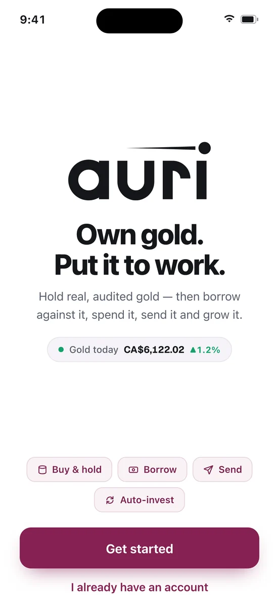
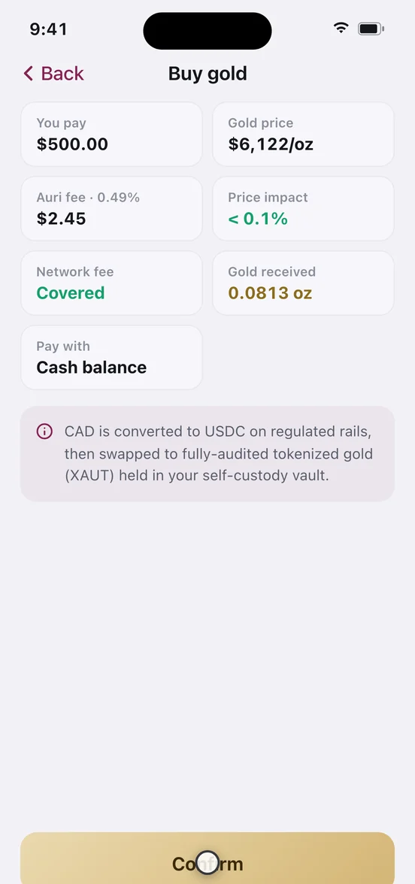
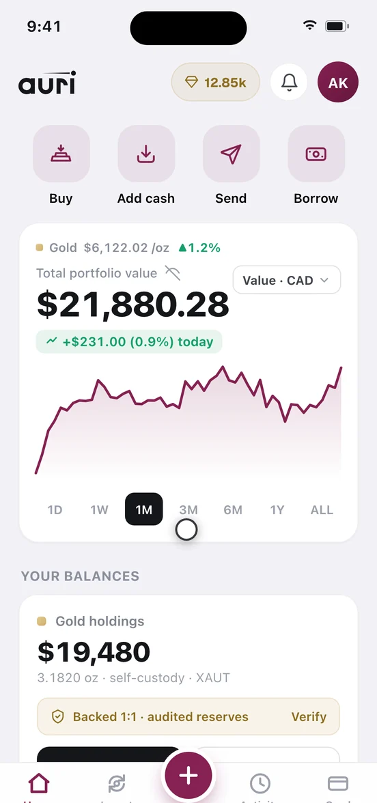

Start here
One path, start to finish, for your first hour with Auri: create an account without a password, clear the single identity check, and buy your first gold. Follow it end to end and you finish owning gold you can verify on a public blockchain. Budget about ten minutes.
Before you start
Auri lets you hold gold the way you hold cash in a banking app. The gold is Tether Gold — each token backed by one troy ounce of vaulted physical gold — in a vault whose address only you control. Everything else in the product sits on top of that one holding, which is why this is the prerequisite page. Custody detail: how your gold is backed.
- An email address or mobile number you can receive a code on. No password is needed, or accepted.
- A government photo ID — licence or passport. Needed only if you fund from a bank or card.
- A bank account or debit card in your own name. Third-party funding is not permitted.
- An amount for the first buy. This tutorial uses US$100 — big enough to see the mechanics, small enough not to matter.
Time, cost, reversibility. About ten minutes. Auri charges 0.49% on the buy — US$0.49 on US$100 — and your funding rail may add its own fee. A confirmed buy cannot be undone; the only way back is selling at whatever the price is then.
Step 1 — create your account
Sign-in is passwordless, handled by Privy, which also creates the wallet your gold will sit in. There is no separate log-in and sign-up — this screen does both.
- Enter your email or mobile number. Tap
Use phone insteadto switch. The panel is labelled Secured by Privy. - Enter the 6-digit code. There is a
Resendlink if it does not arrive; six digits enablesVerify & continue. - Or skip the code.
Continue with Google,Appleora passkeygoes straight in. A passkey is fastest and hardest to phish. - Enable Face ID or fingerprint when the app asks. You can
Skip for now, but then every return needs a fresh code. - Set country and display currency in Profile. 45 countries, 28 currencies — this changes what you see, not what you own.

Step 2 — verify your identity, once
Auri asks for no ID to open an account. It asks the first time money moves through a bank or a card, and never again. Funding with USDC from a wallet you already own skips this entirely — those methods are tagged No ID.
- Enter your full legal name and date of birth. They must match the ID you are about to photograph.
- Photograph the front of your licence or passport. Flat surface, no glare, no fingers over the text.
- Take a selfie looking straight at the camera in good light.
"Verifying your identity… usually instant" appears, and when it clears you land back where you left off. In Canada the app names the rule directly: a one-time check is required for bank transfers under Canadian FINTRAC rules. Equivalent rules apply elsewhere.
Step 3 — choose how you will pay
You do not need to top up a balance first — the buy screen pays straight from a funding method. Pick one row and use it for the rest of this tutorial.
| Method | Speed | Fee | ID check |
|---|---|---|---|
| Instant bank rail — Interac e-Transfer in Canada | Minutes | No fee | Required |
| Bank transfer — EFT in Canada, bank transfer in the US | 1–2 business days | No Auri fee stated | Required |
| Debit card | Instant | 1% | Required |
| USDC from your own wallet, on Arbitrum | Minutes | No Auri fee; you pay your wallet's network fee | Not required |
The instant rail is the best first choice where it exists: free, and settled while you are still paying attention. A bank transfer credits only on settlement, possibly next business day — slow, not broken. Rail detail: moving cash in and out.
Step 4 — buy your first gold
- Open Buy. It is on Home, in the move-money menu, and in
Actionsunder Gold. - Type 100. The unit dropdown accepts dollars, grams, ounces or XAUT — leave it on dollars. A live line shows the gold equivalent.
- Choose your method under "Pay with". If it is a bank or card method and you have not verified, step 2 appears here.
- Read the review screen. The one screen worth slowing down on; the table below explains every line.
- Tap Confirm. A bank-funded buy shows live progress you can minimise and be notified about; a cash-balance buy completes immediately.

| Review line | What it means on a US$100 buy |
|---|---|
| You pay | US$100.00 — the amount you typed |
| Gold price | The live price per troy ounce. It moves while you read. |
| Auri fee · 0.49% | US$0.49 |
| Price impact | Shown as less than 0.1% |
| Network fee | Covered — Auri pays the blockchain fee |
| Gold received | US$99.51 converted at the live price |
Between Confirm and Success: your deposit arrives on regulated payment rails and becomes USDC, the USDC is swapped for tokenised gold, and the gold is credited to your self-custody vault on Arbitrum. There the token is XAUt0, the cross-chain version of Tether Gold, backed one-for-one by native Tether Gold locked on Ethereum. The app may label it simply XAUT.
What you will see when it works
The success screen reads "Gold purchased — x oz added to your vault", with a proof block: network, block number, transaction hash, and View on Arbiscan. Tap it. The proof is permanent — any Activity row expands into every on-chain and off-chain leg with a hash or reference.
The number to check is the ounces credited: US$99.51 divided by the review-screen price, within the stated price impact. The buy also earns Auri Jewels at 1 per $1 spent; 100 Jewels convert back into $1 of gold.
Step 5 — read your Home screen
- Total value and return, with 1D to ALL chart ranges. On day one the return is slightly negative because of the 0.49% fee — arithmetic, not a loss of gold.
- Your gold, split locked and free — all free right now. Gold locks only when it backs a loan, and locked gold cannot be sold, sent or gifted until you free it.
- Cash · USDC — your spendable balance inside Auri, held as a dollar stablecoin.
- Portfolio mix, one bar of gold against cash, plus a reserves banner with
Verify proof. A loan card appears only once you have a loan. - A display-unit picker behind the gold price: your currency, grams, ounces or XAUT. Grams is the more human-sized unit for a US$100 holding.

Why a small first buy is the right first buy
Gold is a store of value, not an income asset. No dividend, no interest, no earnings — the whole return is the price, and the price can fall for years at a stretch. Most people hold it as insurance against their own currency, not because they expect it to outperform. That tells you what to measure on day one: whether you can hold the position calmly, not whether it rose this week.
A small first buy buys information no documentation can: how long your rail really takes, how the price you got compares with the price you saw, and how you feel when the position is down a few dollars. Those answers tell you whether a larger amount is appropriate. The experiment costs 49 cents at US$100; at US$10,000 it costs US$49 and much more anxiety.
When buying gold is the wrong move. If you carry high-interest debt, paying it down is a guaranteed return gold cannot promise. If you need the money inside a year, a volatile asset is the wrong container. If you are buying mainly because the price just rose, wait a week. Auri will not tell you what share of your savings belongs in gold, and be wary of anyone who does. The full accounting is on risks — read it before your second buy.
If something does not look right
- The code never arrives.
Resendonce, check spam, then switch identifier or use a passkey — a passkey needs no code. - The buy says pending. Bank transfers credit on settlement, typically one to two business days. Expand the
Activityrow to see which leg it waits on. - Verification failed. Usually glare, a cropped edge, or a name mismatch. Retake flat under indirect light; enter your legal name exactly as printed.
- The ounces look wrong. Recompute: amount minus 0.49%, divided by the review-screen price. If it still differs, the price moved — the review screen quotes, it does not lock.
- You sent USDC on the wrong network. Only send USDC on Arbitrum. Other tokens or networks may be unrecoverable — no support ticket reverses a blockchain transfer.
Auri can never approve a transaction for you. Anything leaving your account later — sending, gifting, moving gold to an external wallet — needs a second confirmation from you, by passkey or two 6-digit codes. Treat any message asking for a code as an attack.
Do one of three things next
- Make it automatic. A recurring buy from $10 a cycle — daily, weekly or monthly — is the least judgement-dependent way to build a position. See recurring buys.
- Borrow against it instead of selling. Take a dollar loan against your gold, keep the gold, repay when you like; the rate floats and is shown live. Read borrowing against your gold first — this is the part of Auri where gold can be lost, and that page explains how.
- Give some away. Gold in grams makes a better gift than a bank transfer, and the recipient needs no Auri account first. See gifting and sending gold.
- Look something up. Every fee, limit and minimum is collected on the reference page.
Nothing here is financial, tax or legal advice. The price of gold can fall as well as rise, and has fallen for years at a time; you can end up with less money than you put in. Figures here are those shown in the app at the time of writing — the live numbers on your own review screen take precedence.
Auri is a non-custodial software platform, not a bank. Nothing here is financial, tax or legal advice. Digital assets are not deposits and are not covered by any deposit-insurance scheme. Screenshots come from a demo build, so the figures in them are illustrative. Full risk & legal notice.